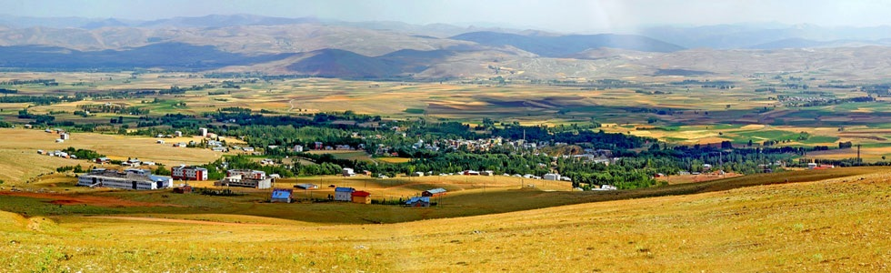
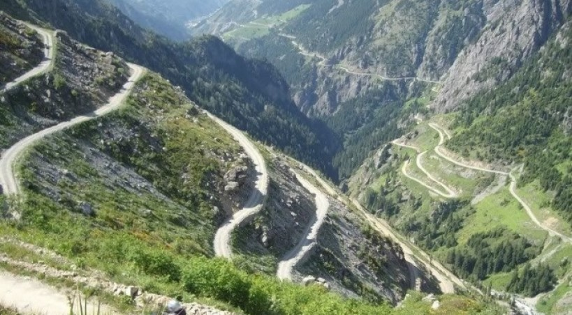
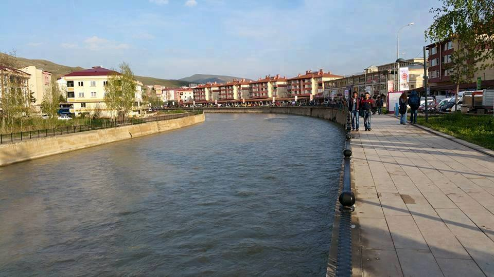
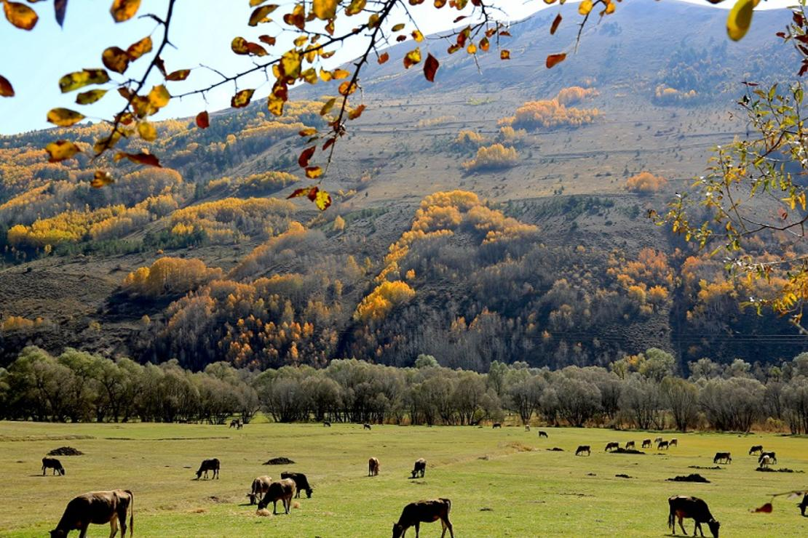

BAYBURT
Kahramanlar eli BAYBURT otağı
- Nüfus: 82.274
- Rakım: 1.550 m
- Yüzölçümü: 404.300,00 km2
- Plaka Kodu: 69
- Telefon Kodu: 458
Genel Olarak Bayburt
Şirin Yurt Bayburt
Bayburt kuzeyinde Trabzon, güneyinde Erzincan, Batısında Gümüşhane, Doğusunda Erzurum ile çevrili bir halde tam uğrak noktada bulunmaktadır. Ne yöne giderseniz gidin mutlaka 2000 rakımdan yüksek bir geçitle karşılaşırsınız. Nüfusu az olması sebebiyle sürekli dalga konusu olan Bayburt yaşanabilecek bir şehirdir. Çünkü nüfus az olması sebebiyle olay yaşanmıyor. 2018 yılında kadın cinayeti olmayan tek il Bayburt'tu. Hırsızlık olayları yok denecek kadar az.
Bayburtspor Ne Halde?
Ligin bitimine 3 hafta kala en yakın takipçisiyle puan farkı 5 olan temsilcimiz Bayburt, 2.lig'e doğru adım adım ilerliyor. Bu sene spor gündemine Türkiye profesyonel liglerinde tek mağlup olmayan takım olarak uzun bir süre yerini korumuştu.
Bayburt Hakkında
Bayburt 40 derece 37 dakika Kuzey Enlemi ile 40 derece 45 dakika Doğu boylamı, 39 derece 52 dakika Güney enlemi ile 39 derece 37 dakika batı boylamları arasında yer alır. Doğusunda Erzurum, batısında Gümüşhane, kuzeyinde Trabzon ve Rize, güneyinde Erzincan illeri ile çevrili Anadolu' nun kuzey doğusunda Çoruh Nehri kenarında ve denizden 1550 m. yükseklikte kurulmuş 3739 km² yüzölçümlü bir ildir.
Yeryüzü Şekilleri : Bayburt ve çevresi yeryüzü şekilleri bakımından üç bölümden oluşmaktadır. Birincisi; batı yarısını oluşturan Bayburt ovası, ikincisi ise akarsuların oluşturduğu vadiler ve üçüncüsünü de; yörenin etrafını çevreleyen ve doğu yarısında yer alan dağlık alanlardır.
 Ovaları : Yaklaşık olarak 900 km2'yi bulan Bayburt Ovası, esas itibariyle dört bölümden oluşmaktadır. Bunlardan Keçevi düzü 1600-1750 metreler arasında yer tutar, Aydıntepe ovası, 1450-1550 metreler arasındadır.
 Dağları : Dağlık alanlar İl yüzölçümünün % 45'ini oluşturmaktadır. Ovanın kuzeyinde ve güneyinde yüksek sıradağlar bulunmamaktadır. Güneyde yer alanlar; Pulur (2.300 m), Otlukbeli (2520 m), Saruhan (2400 m), Coşan(2963 m), Kop (2600 m) ve Çavuşkıran (2850 m) dağlarıdır. Sahanın kuzey kesimindeki dağlar; Zülfe (2750 m), Kemer (2856 m), Soğanlı (2750 m), Haldizen (3000 m), Kırklar (3350 m) dağlarıdır. Ayrıca ilde Kaledere tepesi (2500 m), Ziyaret tepesi (2400 m) gibi tepeler bulunmaktadır. Yaylaları : İlimiz, Coğrafi konumuyla, ülke genelinde fazlaca yaylaya sahip illerinden biridir. Yaylalarımız genel olarak Kop ve Soğanlı dağlarında bulunmaktadır, Bunlardan bazıları Aydın tepe, Akbulut, Cumavank, Otlukbeli, Yazyurdu, Yoncalı, Tohnovi, Çavdar, Somarova, Karakaya, Menge, Seydiyakup, Kavlatan, Akkoyun Solkarı, Gümüşdamla, Yaylapınar, Üzengili, Kuşmer, Gökçedere, Dumlu, Günbuldu, Şur, Irmak, Eser, Çukur, Ardıçgöze, Armutlu, Göloba, Çençül ve Kop yaylaları.
 Akarsuları : İlin en önemli su kaynaklarından biri olan Çoruh nehri, kaynağını Mescit dağlarından 3239 m. alarak il sınırlarına güney doğudan girmektedir. Nehrin oluşması esnasında Masat vadisinden gelen ana kaynak ile Kop dağlarının eteklerinden gelen kop suyu maden bucağında birleşirler. Alt kısımlardaki diğer küçük derelerin sularını da toplayan Çoruh nehri, şehre ulaşır. Şehir yerleşiğinin orta bölümünden güney-kuzey doğrultusunda geçen Çoruh aynı yönde akışına bir süre daha devam eder. Otlukbeli ve Pulur dağlarından kaynağını alan Beşpınar deresi ile Pulur (Gökçedere) deresinin Mormuş ovasında birleşen suyu ile Akşar ve Sorkunlu derelerinin sularından oluşan Değirmencik suyunu aldıktan sonra suları iyice çoğalır ve dirsek yaparak doğuya yönelir. Daha sonra nehir dar ve derin olan Çoruh vadisine girer ve batı doğu doğrultusunda akışına devam eder.
 Gölleri : İlimiz gölleri genelde krater gölleri olup, Soğanlı Dağları üzerinde yer almaktadır. Bunlardan bazıları Haldizen (Balıklı Göl), Göloba (Atlı Göl ) v.s.
Gölleri : İlimiz gölleri genelde krater gölleri olup, Soğanlı Dağları üzerinde yer almaktadır. Bunlardan bazıları Haldizen (Balıklı Göl), Göloba (Atlı Göl ) v.s.
 İklim: Bayburt'ta doğu Karadeniz iklimi ile doğu Anadolu iklimi arasında, karasal özellikleri ağır basan bir geçiş iklimi hüküm sürmektedir. Bu nedenle yazları sıcak ve kurak, kışları ise soğuk ve yağışlı geçmektedir. Ancak, gerek ortalama yüksekliğin azlığı, gerekse vadiler sisteminin oluşturduğu “Mikroklima” sayesinde Doğu Anadolu' ya göre iklim yumuşaktır. Yaz günleri genellikle Mayıs – Eylül ayları arasında kendini göstermektedir. Bayburt'ta yağışlı günler 102, ortalama yağış 433,4 mm'dir. En yüksek sıcaklık 36,2 C (20.07.1962) ve en düşük sıcaklık –26,2 C (29.01.1964), ortalama ısı ise 7,0 C derecedir.